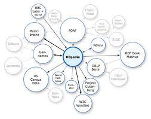

We will use protégé to create new classes and subclasses for Urdu native users. We will use languages to
query all data bases like sparql. In this project many data bases can share data. We will get our data
from Wikipedia and many other resources.

Mostly the data that we exchange between the software or
applications will be the definitions of data. We can work on NLG in future after completing mapping of
ontologies.This system will support all devices with internet support and google search engine. There is
not specific hardware requirement for user. There is not hardware interfaces for this project.